eSariSari
Franchise financial operations platform
User Guide
Sub-Franchisee · Franchisee · Retailer
A click-by-click walkthrough of how to buy Internet Credits, release them down the chain (request or Direct Release), record a customer sale, and read both earnings streams on Revenue and Reports. Admin is not covered in this version. Detailed formulas are in section 1 and in the Excel workbook esari-computations.xlsx.
1 September 2026 · Demo environment
Download User Guide Word copy · Download computations (Excel)
1. How the money works (read this first)
Every role in this guide is part of one chain. Credits move down. Cash for loads moves up. Customer cash for internet sales is split as a % of the customer payment (Sales).
| Who | Buys credits from | Sells / uses credits | Typical deposit rate |
|---|---|---|---|
| Sub-Franchisee | Admin / platform | Franchisees | Buys at 60%, sells at 70% |
| Franchisee | Sub-Franchisee | Retailers | Buys at 70%, sells at 80% |
| Retailer | Franchisee | End customers (internet sales) | Buys at 80% |
Two different earning streams
Do not mix these up. The app prices them on different screens, and they show up as different numbers on Revenue and Reports.
| Stream | When it happens | What you earn | Where you set it |
|---|---|---|---|
| Internet Credits earnings | A downline deposits cash and you release credits (request or Direct Release) | Admin: cash collected. Sub/Fran: cash in minus what those credits cost you | Deposit Rates |
| Sales Commission | A retailer sells internet to a customer | Your % of the customer payment (Sales) | Commission Settings (Sub-Franchisee / Admin) |
Credit loads — cash in, credits out
A deposit rate is the cash paid divided by the credit face value. Formula: credits = deposit ÷ rate. Example at 70%: ₱7,000 cash buys 10,000 credits.
Worked example on 1,000 credits (1 credit face = ₱1 for display):
| Hop | Cash paid | Credits received | Spread for the seller |
|---|---|---|---|
| Admin → Sub-Franchisee @ 60% | ₱600 | 1,000 | Admin collects load cash |
| Sub-Franchisee → Franchisee @ 70% | ₱700 | 1,000 | Sub earns ₱100 Internet Credits earnings |
| Franchisee → Retailer @ 80% | ₱800 | 1,000 | Franchisee earns ₱100 Internet Credits earnings |
Internet sales — customer payment, then a split
In this demo, the retailer records a sale from Transactions → Record demo sale. Credits consumed equal the customer payment (100% of sales). Commission Settings split that same customer payment (Sales).
- Customer payment (Sales) — what the customer paid (example ₱1,000). Commission Settings % apply here.
- Credits consumed — inventory burned from the retailer’s Available Credits (example ₱1,000, equal to the payment).
After a ₱1,000 demo sale on Retailer A (demo settings 10% / 20% / 30% / 40% of sales):
| Party | Share of ₱1,000 sales | Amount |
|---|---|---|
| Retailer A | 10% | ₱100.00 |
| Franchisee A | 20% | ₱200.00 |
| Northern Mindanao Sub-Franchisee | 30% | ₱300.00 |
| eSariSari platform | 40% | ₱400.00 |
| Total | 100% | ₱1,000.00 |
Detailed computations
The app always rounds peso amounts to two decimal places (ROUND to 0.01). 1 credit face = ₱1 for display. Yellow cells in the Excel workbook esari-computations.xlsx are inputs; grey cells recompute. Direct Release uses the same load formulas as a released request.
Keep the Excel file next to this guide (docs/esari-computations.xlsx), or download it from Sign In (download Excel) or from your name menu → Download computations (Excel). Sheets, left to right: Load calculator, Sale calculator, Worked examples, Demo defaults, then Read me and All formulas.
Internet Credits loads
Deposit rate = cash paid ÷ credit face. Never add a percent to the cash.
| What | Formula | Worked example |
|---|---|---|
| Suggested credits | credits = ROUND(deposit ÷ rate, 2) | ₱7,000 ÷ 70% = 10,000 credits |
| Cash for 1,000 credits | cash = ROUND(1,000 × rate, 2) | 1,000 × 80% = ₱800 |
| Admin IC earnings | cash collected on released loads | ₱600 cash for 1,000 credits at 60% |
| Sub / Fran IC earnings | spread = cash in − ROUND(credits × your buy rate, 2) | ₱700 − (1,000 × 60%) = ₱100 |
Default hops and what the seller earns on 1,000 credits:
| Hop | Rate | Cash paid | Seller cost | Seller IC earnings |
|---|---|---|---|---|
| Admin → Sub-Franchisee | 60% | ₱600 | — (Admin collects cash) | ₱600 cash collected |
| Sub-Franchisee → Franchisee | 70% | ₱700 | ₱600 (bought at 60%) | ₱100 spread |
| Franchisee → Retailer | 80% | ₱800 | ₱700 (bought at 70%) | ₱100 spread |
| Retailer → customer | n/a (sale, not a load) | customer payment | credits consumed | No load spread — commission only |
Guide example — Sub New Credits Request: ₱30,000 at 60% → 50,000 credits. Direct Release ₱7,000 at 70% → 10,000 credits; Sub cost ₱6,000; Sub IC earnings ₱1,000. Retailer request ₱1,600 at 80% → 2,000 credits.
Demo internet sale
Record demo sale burns Available Credits at 100% of the customer payment. If credits required are more than Available Credits, the sale is blocked.
| Line | Formula | On a ₱1,000 sale |
|---|---|---|
| Credits consumed | ROUND(payment, 2) | ₱1,000.00 |
| Commission base (Sales) | customer payment | ₱1,000.00 |
Commission split
Each party’s commission is ROUND(customer payment × their % ÷ 100, 2). Platform gets the remainder so the four shares always add up to the customer payment (leftover cents). Credits consumed stay inventory and are not subtracted from the split.
On Commission Settings: Admin can edit the platform fee; Sub-Franchisee share is the remainder. A Sub-Franchisee can edit Retailer %, Franchisee %, and Your Share; the platform fee is Admin-set and read-only. The four percentages must total 100% of sales.
| Retailer (demo seed) | Retailer | Franchisee | Sub-Franchisee | Platform |
|---|---|---|---|---|
| Retailer A / B / C | 10% | 20% | 30% | 40% |
| New settings dialog default | 10% | 20% | 30% | 40% |
| Party on a ₱1,000 Retailer A sale | % of ₱1,000 sales | Amount |
|---|---|---|
| Retailer A | 10% | ₱100.00 |
| Franchisee A | 20% | ₱200.00 |
| Northern Mindanao Sub-Franchisee | 30% | ₱300.00 |
| eSariSari platform (remainder) | 40% | ₱400.00 |
| Total | 100% | ₱1,000.00 |
Sub / Franchisee Revenue Total earnings = Internet Credits earnings (spreads in the period) + Sales Commission (credited shares in the period). Retailers have no load-spread stream — only their commission, sales volume, and credits consumed.
Available Credits and alerts
| What | Formula | Example |
|---|---|---|
| Available Credits | opening + credits received − credits released − credits consumed on sales | Retailer A: 6,250 received − 970 consumed = ₱5,280 |
| Sufficient | available > ₱5,000 | ₱5,280 |
| Low Balance | ₱0 < available ≤ ₱5,000 | Retailer B ₱2,500 — amber banner |
| Zero Balance | available ≤ ₱0 | Fresh franchisee / retailer — red banner |
2. Sign in
Open the app and use the Sign In card. Demo accounts sit under the form.
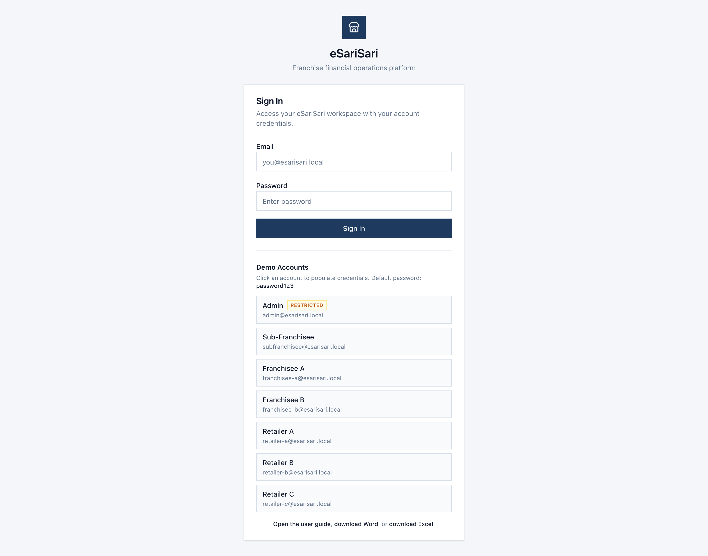
- Open the app: https://prlusterio.github.io/esari-finops-mvp/login
- Optional: at the bottom of Sign In, open the user guide, download User Guide Word copy, or download Excel (the computations workbook). After you sign in, the same Excel file is also under your name → Download computations (Excel).
- Under Demo Accounts, click Sub-Franchisee, Franchisee A, or Retailer A. That fills the email only — not the password.
- Type the shared demo password: password123. (Admin is marked Restricted and is not used in this guide.)
- Click Sign In.
- You land on that role’s home page: Wallets for Sub-Franchisee and Franchisee, Wallet for Retailer.
| Role | Demo email | Password | Home screen | Opening Available Credits |
|---|---|---|---|---|
| Sub-Franchisee | subfranchisee@esarisari.local | password123 | Wallets | ₱135,000 |
| Franchisee A | franchisee-a@esarisari.local | password123 | Wallets | ₱0 — request or receive a Direct Release |
| Franchisee B | franchisee-b@esarisari.local | password123 | Wallets | ₱0 |
| Retailer A (under Fran A) | retailer-a@esarisari.local | password123 | Wallet | ₱0 |
| Retailer B (under Fran A) | retailer-b@esarisari.local | password123 | Wallet | ₱0 |
| Retailer C (under Fran B) | retailer-c@esarisari.local | password123 | Wallet | ₱0 |
Use Franchisee A + Retailer A for the main walkthrough (same chain). The bell in the header shows pending Internet Credits requests from your downlines and low/zero Available Credits (≤ ₱5,000). Click an alert to jump to Internet Credits or Wallets. To switch roles: name at the top right → Logout → another demo account. Do not click Reset Demo Data unless you intend to wipe what you just walked.
3. Sub-Franchisee
You sit between Admin and Franchisees. You buy Internet Credits from Admin, hold them as Available Credits, then release them to franchisees after they deposit cash (or via Direct Release). You also earn a share of every internet sale in your network.
- Left menu you will use: Wallets, Internet Credits, Deposit Rates, Commission Settings, Transactions, Revenue, Reports.
- Dashboard and Franchisees appear in the menu but are not clickable in this demo.
- Your org in the sample data is Northern Mindanao Sub-Franchisee. Downlines: Franchisee A and Franchisee B.
3.1 Wallets — see inventory across your network
After sign-in you land here. This is a monitor, not a place to move money. Credit loads still go through Internet Credits (cash + proof).
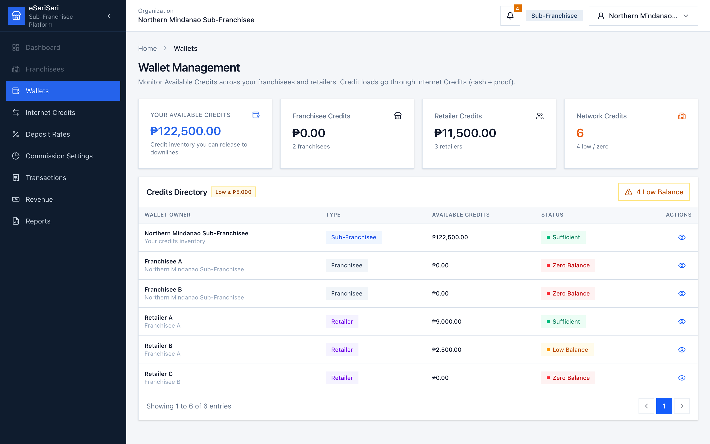
- Click Wallets in the left menu (or stay here after login).
- Read Your Available Credits. That is stock you can still release to franchisees. After Reset Demo Data this is ₱135,000.00.
- Read Franchisee Credits and Retailer Credits. Those are balances already sitting with downlines, not your cash. Franchisees and retailers start at ₱0.
- Network Credits shows how many wallets you manage and how many are Low / Zero. Low means Available Credits ≤ ₱5,000.
- Optional: click the Low Balance chip above the table to show only wallets that need a top-up.
- If Your Available Credits is Low (≤ ₱5,000) or Zero, a warning/danger banner appears on this page (same idea as the bell). New Credits Request opens Internet Credits with the request sheet already open.
- Click the eye icon on a row to open that wallet’s details (Available Credits, parent, recent credit activity). There is no Minimum Balance card on this modal.
- If a franchisee is low, go to Internet Credits. You can wait for their request (your bell will ping) or use Direct Release after they have paid.
3.2 Internet Credits — buy from Admin
This is how you restock. You deposit cash to Admin, attach proof, and wait for Admin to release credits into your Available Credits. Default buy rate is 60% (₱600 cash → 1,000 credits).
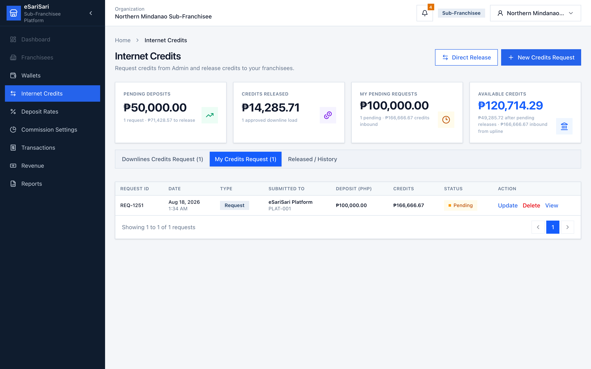
- Click Internet Credits.
- Note the cards: Pending Deposits (cash from franchisees not yet released), Pending Credits, Credits Released, My Pending Requests, Available Credits.
- Click the My Credits Request tab.
- Click + New Credits Request at the top right. The New Credits Request sheet opens on the right.
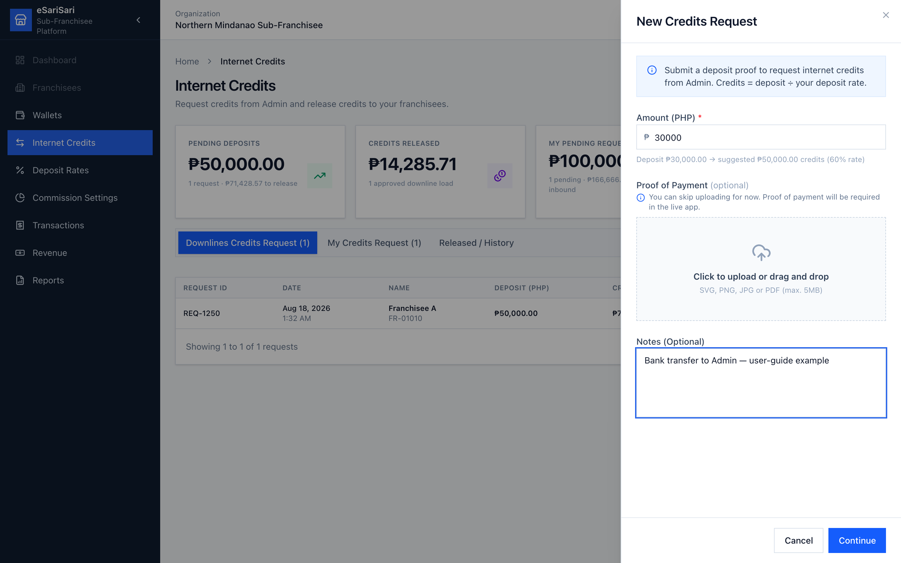
- Enter Amount (PHP) — the cash you already sent to Admin. The form shows suggested credits using credits = deposit ÷ your 60% rate. Example: ₱30,000 → ₱50,000 credits.
- Optionally upload proof of payment (SVG, PNG, JPG, or PDF, max 5MB). Add notes if you have a bank reference. Proof is optional in the demo.
- Click Continue, then confirm. The row appears as Pending on My Credits Request. Type is Request.
- While it is still Pending, you can Update (amount, notes, proof) or Delete. Update reapplies the live deposit rate, not the original snapshot.
- When Admin releases, status becomes Released and Available Credits goes up. Open Released / History to see completed loads. There is no separate Transfer History tab.
3.3 Internet Credits — sell / release to franchisees
Franchisees deposit cash to you and submit a request. You check proof, then release credits from your Available Credits. Default sell rate is 70% (₱700 cash → 1,000 credits). That 10-point gap vs your 60% buy rate is your Internet Credits earnings.
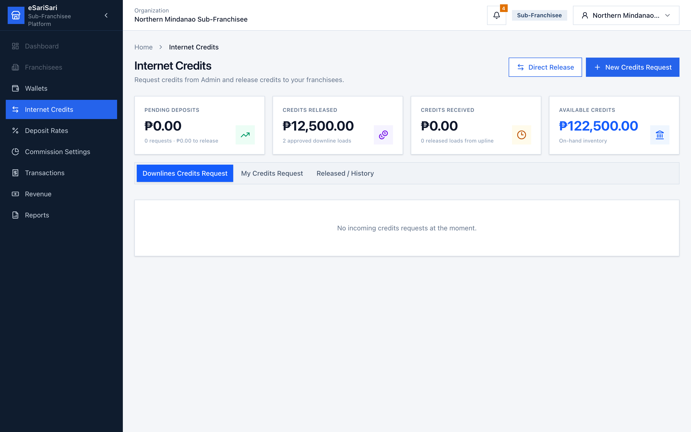
- Stay on Internet Credits. When a franchisee submits a request, the bell shows “{name} requested Internet Credits.” Click it to open this page.
- Click Downlines Credits Request. This tab lists pending requests only. Direct Release never queues here.
- Find a row with Status Pending. Deposit (PHP) is the cash they claim they sent. Credits may show ₱0.00 until you release.
- Click Review. Check name, deposited amount, deposit rate, suggested credits, and Available Credits After Release. If the after-release figure is red, buy from Admin first.
- Open Proof of Payment and match it to the deposited amount.
- To refuse, click Reject, enter a reason, and confirm. No credits move.
- To accept, click Approve & Release. Enter Payment reference ID. Confirm or edit Credits to release (pre-filled from deposit ÷ rate). Click Approve & Release.
- Credits leave your Available Credits and land in the franchisee’s wallet. Status becomes Released. Type stays Request.
Direct Release (skip the pending queue)
Use this when the franchisee already paid and you do not need them to file a request first. Same economics: deposit ÷ rate, optional proof, payment reference required. The sheet is titled Direct Credits Release.
- On Internet Credits, click Direct Release (top right). The Direct Credits Release sheet opens on the right.
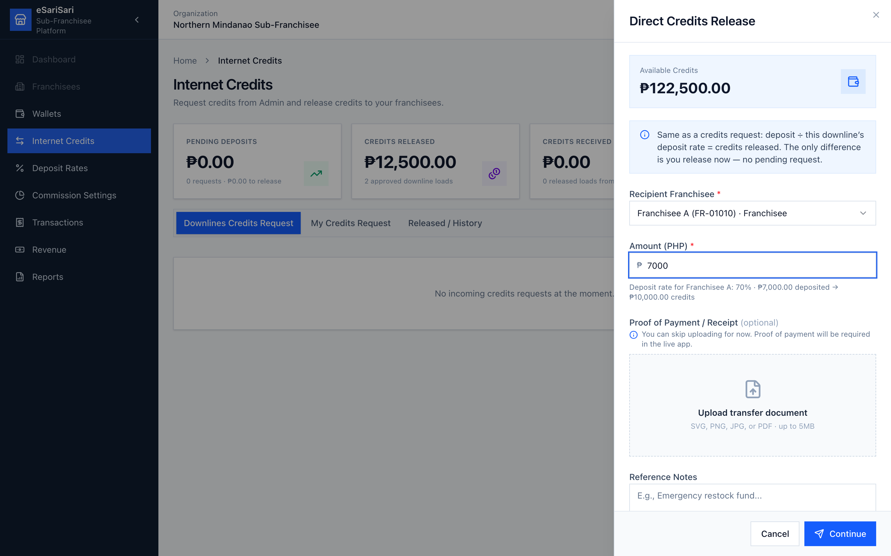
- Pick the franchisee. Enter cash deposited. Confirm suggested credits (deposit ÷ that franchisee’s rate). Attach proof if you have it. Add a note if useful.
- Click Continue, then enter Payment reference ID and confirm. Credits move immediately. The row appears on Released / History and on the franchisee’s My Credits Request with Type = Direct Release.
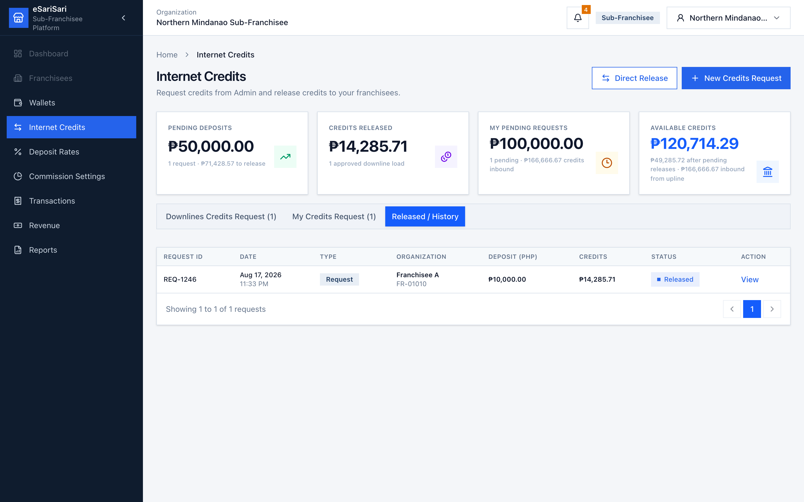
Open Released / History to audit past releases (requests and Direct Releases). View is read-only. Reverse after release is not available in this version.
Internet Credits earnings check on 1,000 credits sold to a franchisee at 70%:
- Cash in from franchisee: ₱700.
- Your cost (what you paid Admin at 60%): ₱600.
- Internet Credits earnings: ₱100. Same as 1,000 × (70% − 60%). This is inventory markup, not sale commission.
3.4 Deposit Rates — price the credit load
This rate card is only for Internet Credits loads to franchisees. It does not change sale commissions. Demo starts with hop defaults only (no custom overrides).
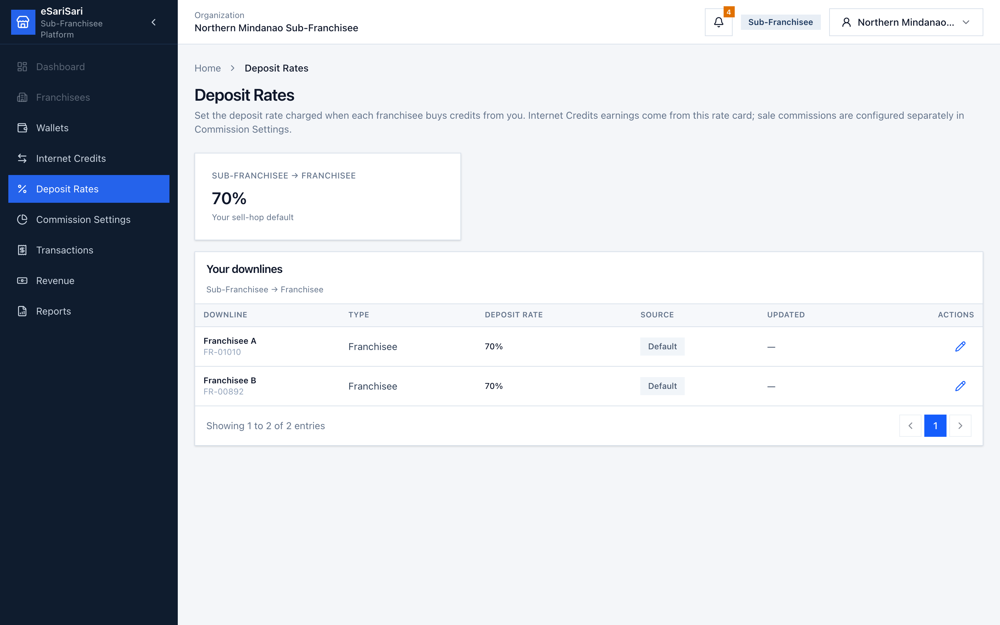
- Click Deposit Rates.
- The big card is your sell-hop default: Sub-Franchisee → Franchisee at 70%.
- Your downlines lists each franchisee. Source Default means they use 70%. Custom means you overrode that one account.
- To change one franchisee, click the pencil. Enter the new rate and a reason. Save. If you type the default 70% again, the override is cleared.
- New requests after the change use the new rate. If the requester Updates a still-pending request, the live rate is reapplied.
3.5 Commission Settings — split each internet sale
This is the other pricing surface. Percentages apply to sales (customer payment), not to credit loads. For each retailer: Retailer %, Franchisee %, Your Share %, Platform Fee % (Admin-set in the demo). Total must be 100% of sales. These % are stamped on each sale — changing a row later does not rewrite completed sales.
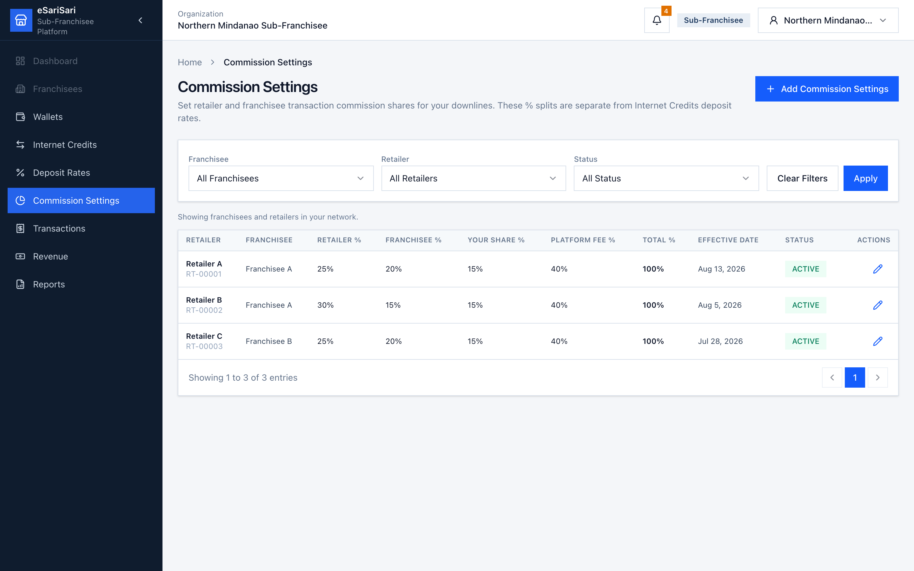
- Click Commission Settings.
- Optional: filter by Franchisee, Retailer, or Status, then Apply.
- Read a row. Demo seed: Retailer A, Retailer B, and Retailer C use 10% / 20% / 30% / 40% of sales.
- To change an existing row, click the pencil. You can edit Retailer %, Franchisee %, and Your Share. Platform fee is set by Admin and is read-only here. The four values must total 100%. Set the effective date and save.
- To add a retailer that has no row yet, click + Add Commission Settings, pick the retailer, enter the shares, and save. Saving Active inactivates the previous Active row for that retailer.
- These % apply to the customer payment of each completed internet sale, not to credit loads.
3.6 Transactions — see sales in your network
This ledger is completed internet sales only. It is not the credit-load list. The demo starts empty — a retailer must Record demo sale before rows appear.
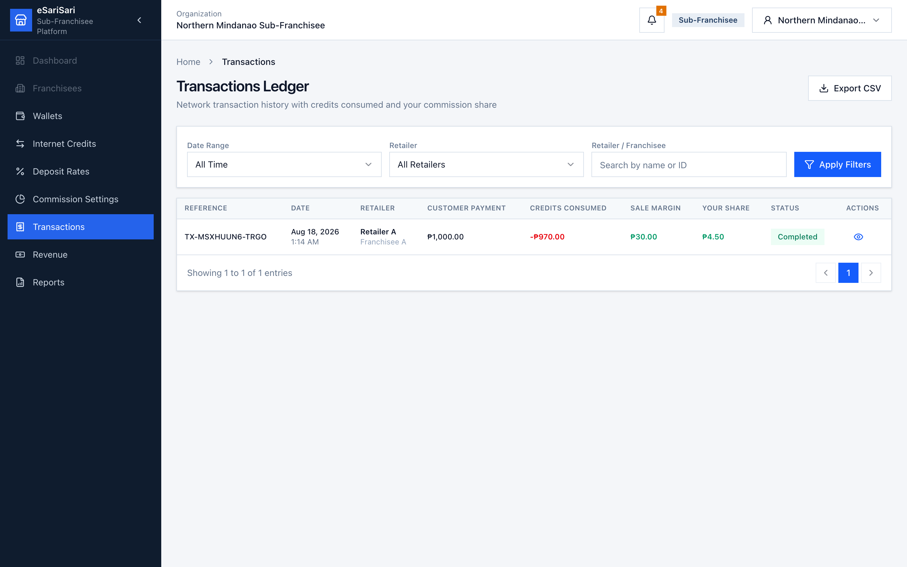
- Click Transactions.
- Optional: set Date Range, pick a Retailer, or search by name / ID, then Apply Filters.
- Read a row left to right: Customer Payment → Credits Consumed (red) → Your Share (your commission).
- After a ₱1,000 sale on Retailer A: customer ₱1,000, credits −₱1,000, your share ₱300.00 (30% of sales).
- Click the eye icon to open Transaction Details. Confirm product, parties, and Commission Distribution. Close when done.
- Optional: Export CSV for a spreadsheet.
3.7 Revenue — Internet Credits earnings plus sales commission
This page answers “what did I earn?” It adds the two streams for the selected period.
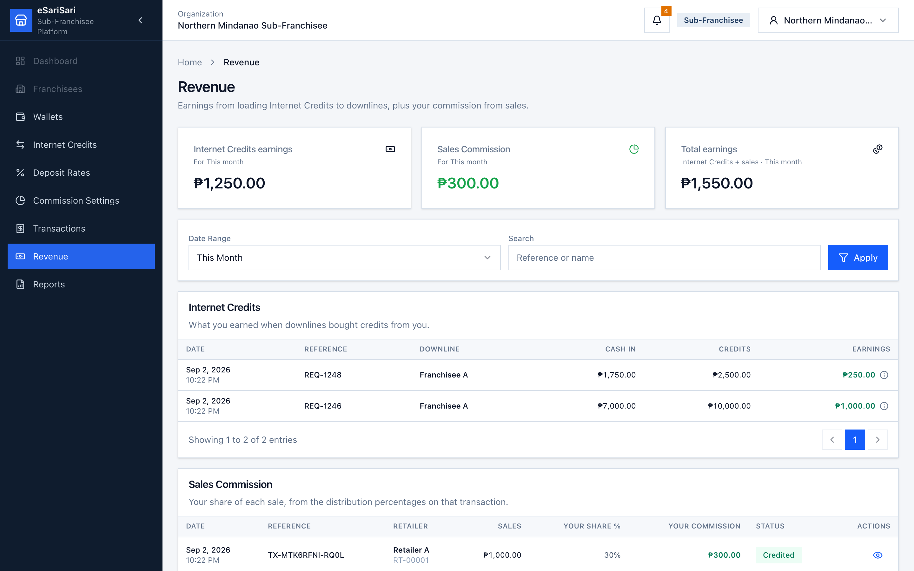
- Click Revenue.
- Read the three cards: Internet Credits earnings (spread on credits you released), Sales Commission (your % of sales), Total earnings (the sum).
- Change Date Range if needed (This Month is the default) and click Apply.
- Internet Credits table: each released downline load, with Cash in, Credits, and Earnings. Click the ⓘ next to an amount to see the formula (cash − cost, or credits × rate gap).
- Sales Commission table: each sale, with Sales, Your share %, and Your commission. Click the eye to open the same transaction detail.
3.8 Reports — period snapshot and CSV exports
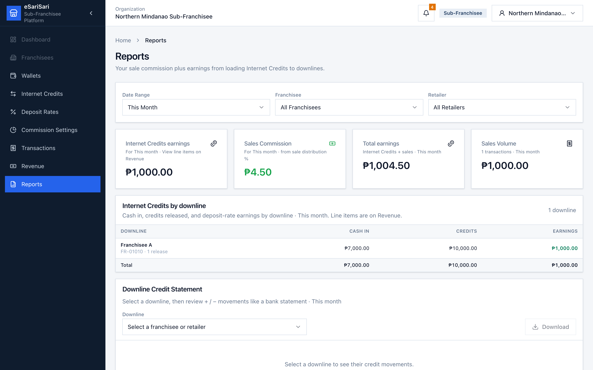
- Click Reports.
- Set Date Range, Franchisee, and/or Retailer. Cards refresh for that period.
- Card order: Internet Credits earnings → Sales Commission → Total earnings → Sales Volume.
- Click the Internet Credits earnings card to open Revenue with the same period, scrolled to the line-item table (each release + ⓘ).
- Internet Credits by downline is a rollup of those same entries (downline, cash in, credits, earnings) — not a copy of the Revenue table.
- Franchisee Commissions / Retailer Commissions show Sales Volume and each party’s share of sales.
- Revenue Sharing Sub-Franchisee is the client-sheet table: Sales, Sub / Franchisee / Retailer shares, and Total Revenue (Sub + Franchisee + Retailer; platform fee is separate).
- Internet Retailer Balance Report: pick one retailer. Credits loaded versus credits consumed on sales, with running wallet balance. Franchisee column is the parent franchisee.
- Downline Credit Statement: pick a franchisee or retailer and read + / − movements like a bank statement. Download becomes available after you select a downline (CSV of + / − and running balance).
- Scroll to Export Reports at the bottom of the page for the CSV cards.
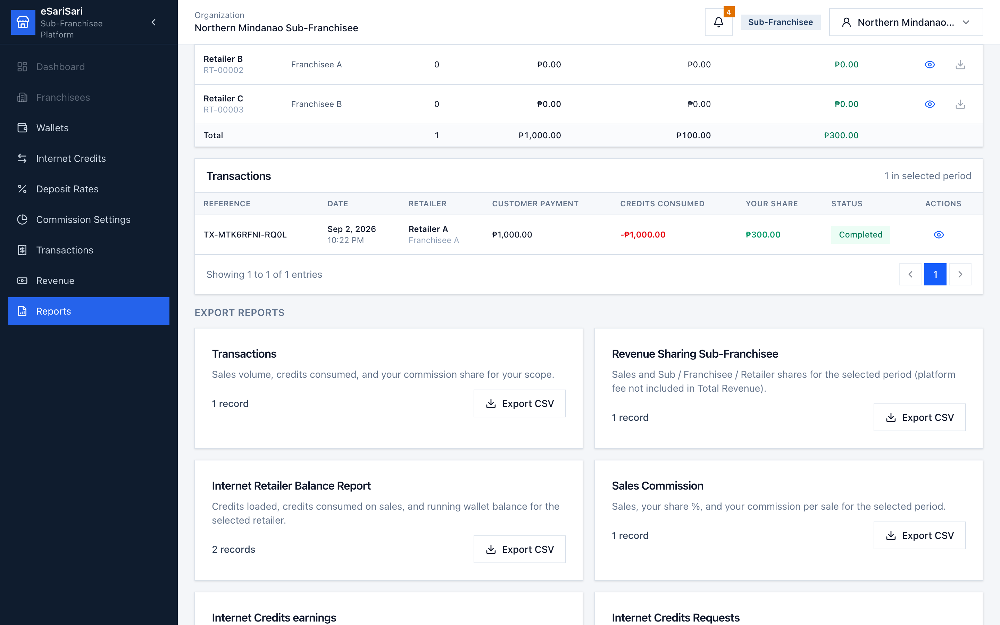
Each card uses the same Date Range / Franchisee / Retailer filters as the rest of Reports. The count is how many rows will be in the file. Export CSV is disabled when the count is 0.
| CSV | What’s in the file |
|---|---|
| Transactions | Each sale in your scope: customer payment, credits consumed, split %, and your share. |
| Sales Commission | Each sale: sales, your share %, your commission, status. |
| Revenue Sharing Sub-Franchisee | Sales and Sub / Franchisee / Retailer shares. Total Revenue excludes platform fee. |
| Internet Credits earnings | Each released downline load: cash in, credits, earnings, buy rate, sell rate. |
| Internet Credits Requests | Requests you can see: deposit, suggested/released credits, rate, payment ref, status (includes Direct Release). |
| Internet Credits Releases | Credit release ledger: deposit, rate, and payment reference. |
- Set filters first (This Month is the default), then scroll to Export Reports.
- Click Export CSV on the card you need. The browser downloads a file named like esarisari-transactions-report-subfranchisee.csv.
- Open it in Excel, Google Sheets, or Numbers. Amounts are unformatted numbers so you can sum them.
- On Franchisee Commissions / Retailer Commissions tables, the download icon on a row exports that party’s sale lines only.
4. Franchisee
You sit between the Sub-Franchisee and retailers. You buy credits from your Sub-Franchisee (demo buy rate 70%), hold Available Credits, then release to retailers (demo sell rate 80%). You also earn a share of each retailer sale. Sign in as Franchisee A for this walkthrough.
- Left menu: Wallets, Internet Credits, Deposit Rates, Transactions, Revenue, Reports.
- You do not have Commission Settings — sale splits are set by the Sub-Franchisee / Admin.
- Dashboard and Retailers appear but are not clickable in this demo.
- Franchisee A’s retailers are Retailer A and Retailer B. You start at ₱0 Available Credits.
4.1 Wallets — you and your retailers
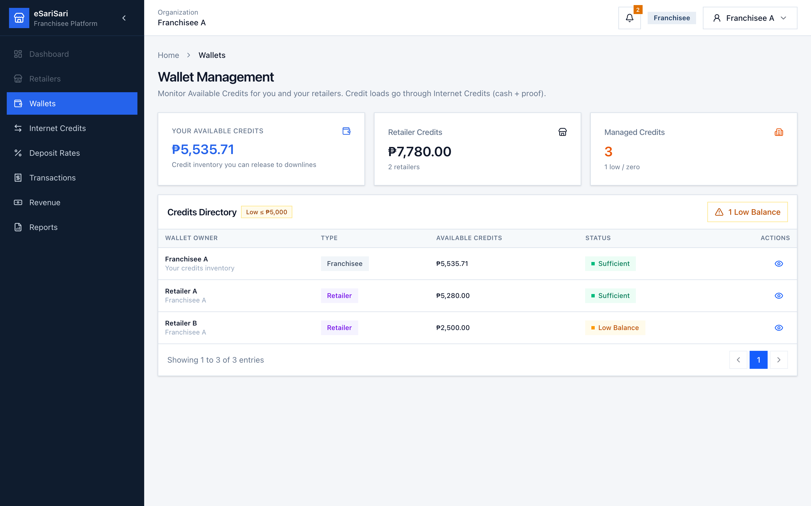
- Sign in as Franchisee A, or click Wallets.
- Your Available Credits is stock you can still release to retailers. After a fresh demo this is ₱0 — restock via Internet Credits first. A Zero (red) or Low (amber) banner on this page also appears when your own inventory is at or below ₱5,000; New Credits Request opens the request sheet to your Sub-Franchisee.
- Retailer Credits is inventory already with your retailers. Managed Credits counts wallets and flags low / zero (≤ ₱5,000).
- Click Low Balance to filter retailers who need a top-up.
- Click the eye on a retailer to see Available Credits, parent (you), and recent credits received. There is no Minimum Balance card.
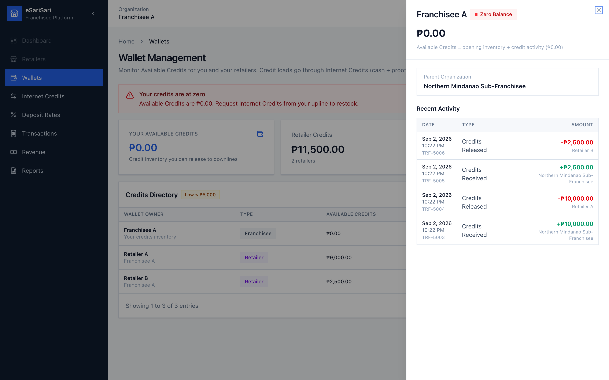
A Low Balance badge means Available Credits is at or below ₱5,000. It does not move money by itself. The retailer must deposit cash and you release from Internet Credits (or you Direct Release after they paid).
4.2 Internet Credits — buy from your Sub-Franchisee
Same buy pattern as the Sub-Franchisee, one hop down. You deposit cash to Northern Mindanao Sub-Franchisee and wait for them to release. Default: ₱700 cash → 1,000 credits. Their bell will show your request.
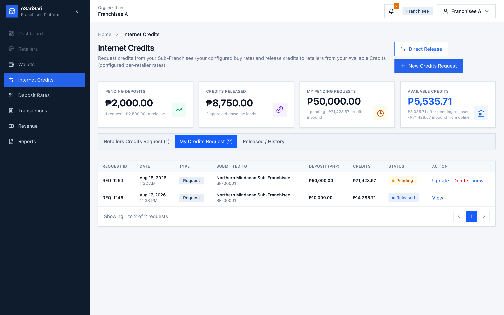
- Click Internet Credits.
- Cards: Pending Deposits (retailer cash waiting on you), Pending Credits, Credits Released, My Pending Requests, Available Credits.
- Click My Credits Request.
- Click + New Credits Request. The New Credits Request sheet opens on the right.
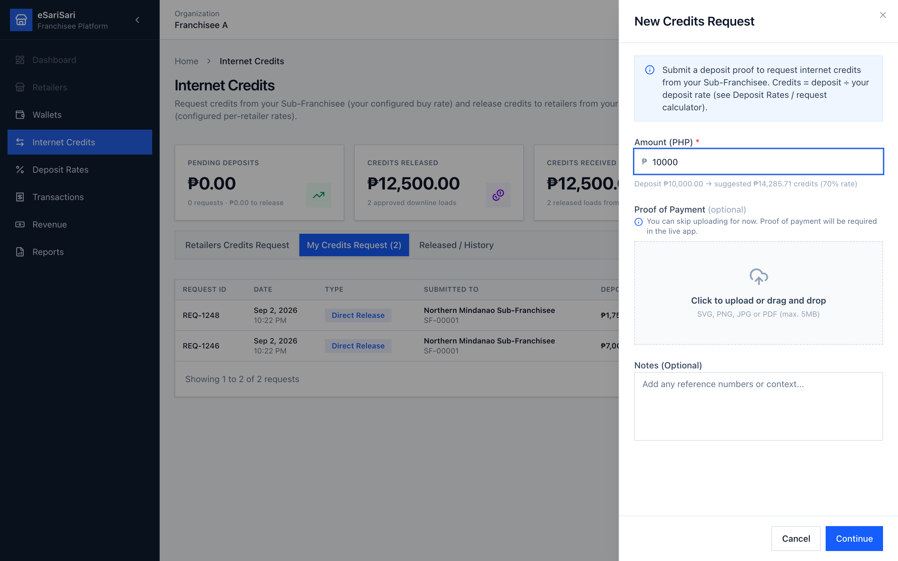
- Enter the cash you deposited to the Sub-Franchisee. Suggested credits = deposit ÷ your buy rate (70% unless overridden).
- Optionally attach proof and notes → Continue → confirm.
- While Pending, you may Update or Delete. When Released (or when you receive a Direct Release), your Available Credits increases. Type shows Request or Direct Release.
4.3 Internet Credits — sell / release to retailers
Retailers deposit cash to you. You release from Available Credits at the per-retailer deposit rate (default 80%). Your Internet Credits earnings are sell-rate cash minus your 70% cost.
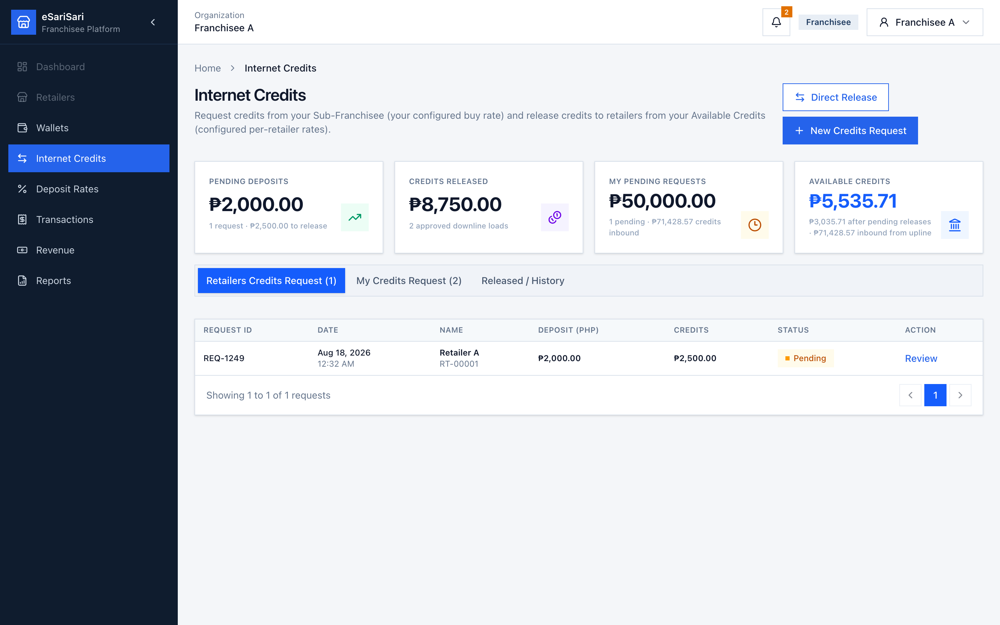
- The bell alerts you when a retailer requests credits. Click it, or open Internet Credits → Retailers Credits Request.
- Open a Pending row with Review. Check Deposited Amount, deposit rate, suggested credits, and Available Credits After Release.
- Match Proof of Payment. Reject with a reason if the proof is wrong.
- Click Approve & Release. Enter Payment reference ID. Confirm Credits to release. Save.
- Or click Direct Release to load a retailer immediately after they paid, without a pending row. The Direct Credits Release sheet opens on the right.
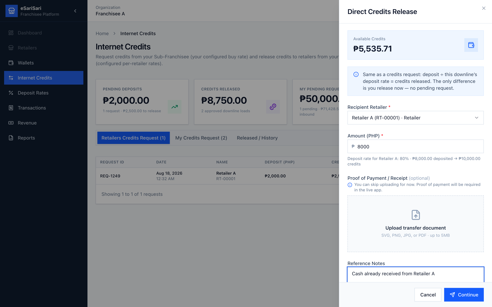
- Pick the retailer, enter cash deposited, confirm suggested credits, then Continue → Payment reference ID → confirm.
- Credits leave your inventory and appear on the retailer’s Wallet / Internet Credits.
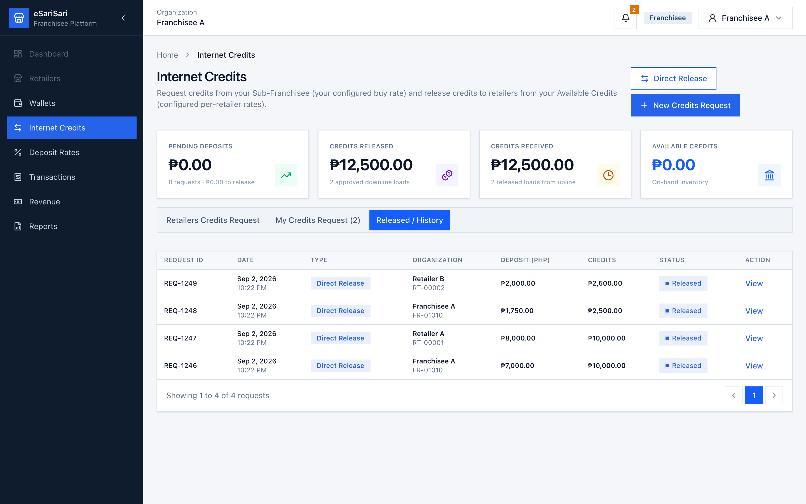
Internet Credits earnings check on 1,000 credits sold to a retailer at 80%:
- Cash in from retailer: ₱800.
- Your cost (paid to Sub-Franchisee at 70%): ₱700.
- Internet Credits earnings: ₱100. If you sold at 70%, spread would be ₱0 — that is why Deposit Rates matter.
4.4 Deposit Rates — what retailers pay you
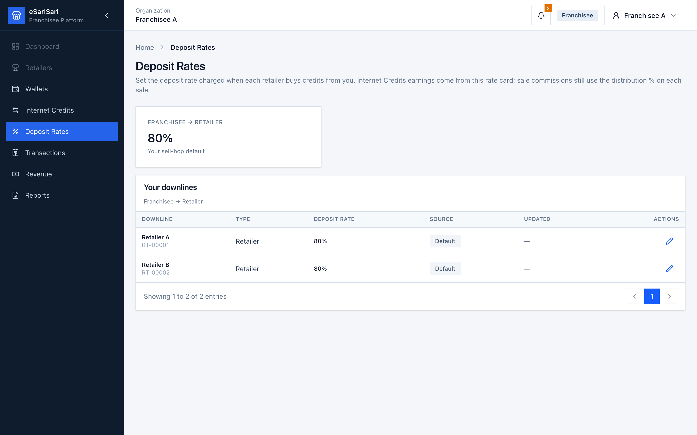
- Click Deposit Rates.
- Default hop is Franchisee → Retailer at 80%. Demo starts with Default on every retailer.
- Edit a retailer with the pencil to set a custom rate (and a reason). Resetting to 80% removes the custom flag.
- Internet Credits earnings on Revenue use this rate card. Sale commissions still use the distribution % on each sale.
4.5 Transactions — retailer sales and your share
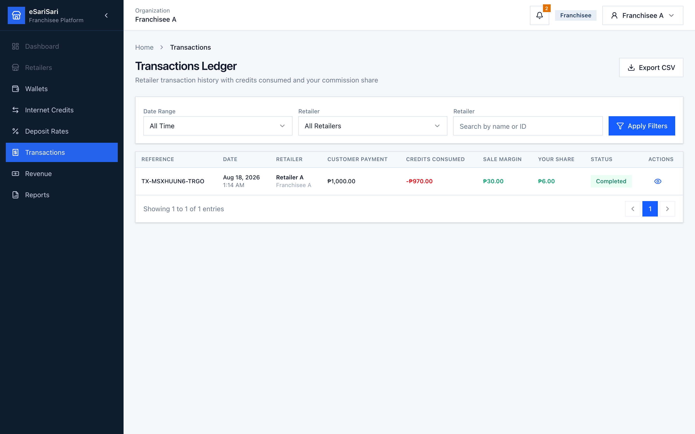
- Click Transactions. The list is empty until a retailer records a demo sale.
- Filter by Date Range or Retailer, search, then Apply Filters.
- Your Share is your commission from that sale’s customer payment (20% of sales on the demo seed), not the full ₱1,000.
- Click the eye on a row for the full split.
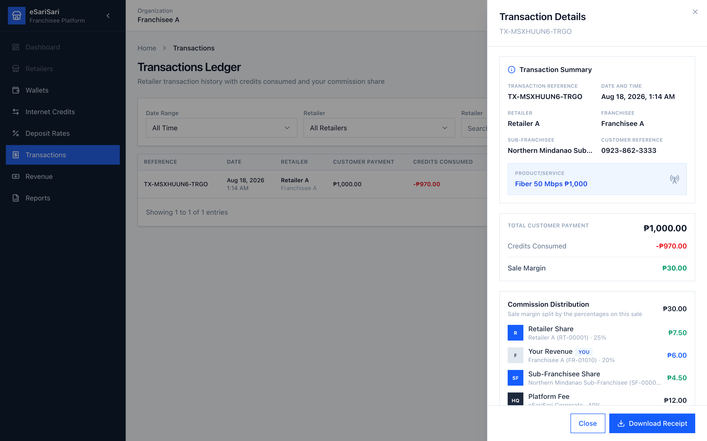
On a ₱1,000 Retailer A sale you should see: customer ₱1,000, credits −₱1,000. Your commission is ₱200.00 (20% of sales). Retailer ₱100.00, Sub-Franchisee ₱300.00, platform ₱400.00. Optional: Download Receipt, then Close.
4.6 Revenue and Reports
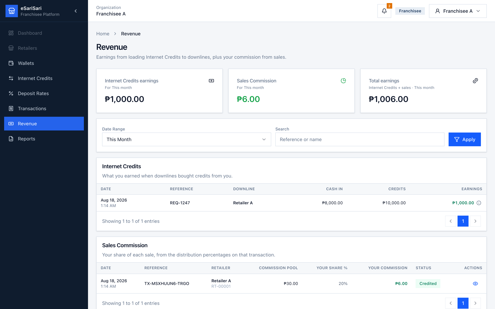
- Click Revenue. Internet Credits earnings = spread on credits you released to retailers. Sales Commission = your % of sales. Total earnings = both.
- Internet Credits table lists each retailer load (Cash in, Credits, Earnings) with ⓘ on the amount. Sales Commission lists each sale (Sales, Your share %, Your commission).
- Click Reports. Same period cards plus Sales Volume. Click the Internet Credits earnings card to open Revenue for that period.
- Internet Credits by downline rolls up cash in, credits, and earnings per retailer. Retailer Commissions uses Sales Volume and each party’s share of sales.
- Internet Retailer Balance Report: pick one of your retailers for credits loaded versus sales, with running wallet balance.
- Scroll to Export Reports for CSV downloads (same filters as the cards above).
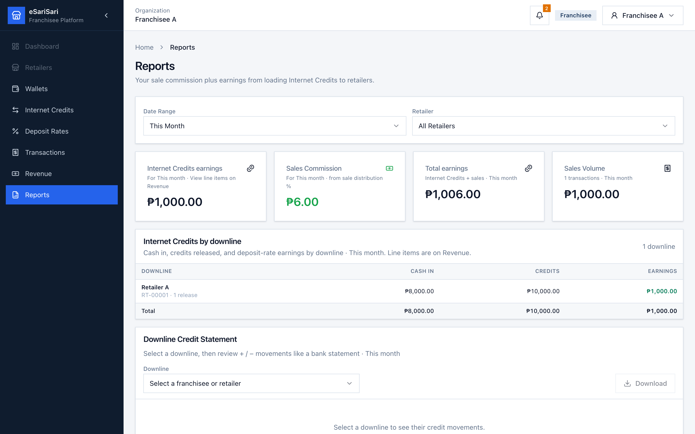
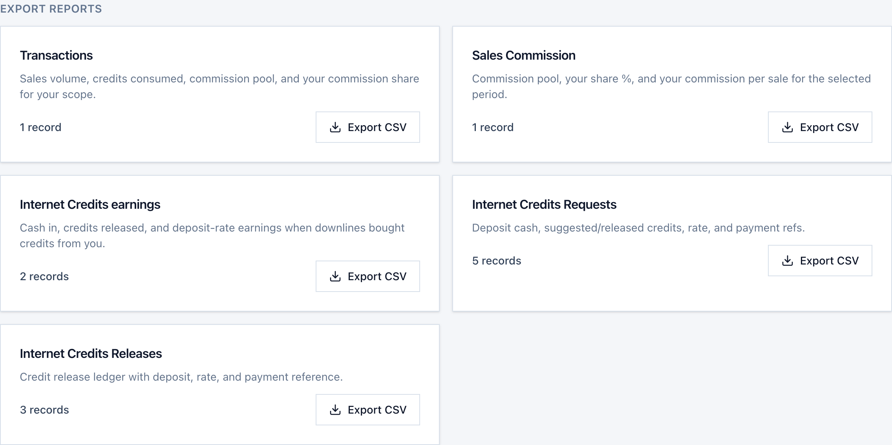
Same files as the Sub-Franchisee except Revenue Sharing Sub-Franchisee (that table is Admin / Sub only): Transactions, Sales Commission, Internet Credits earnings, Requests, and Releases. Counts and rows are only your network (your restock from the Sub plus loads to Retailer A / B, and sales under you). Click Export CSV; the filename includes franchisee.
5. Retailer
You are the end of the credit chain and the start of customer sales. You only buy credits (you have no downline to approve). You deposit cash to your Franchisee, receive Available Credits, then burn those credits when you record a demo sale. You keep your % of each sale’s customer payment — 10% on the demo seed (₱100 on ₱1,000) — not the full payment. Use Retailer A under Franchisee A.
- Left menu: Wallet, Internet Credits, Transactions, Revenue, Reports.
- No Deposit Rates, Commission Settings, or Direct Release — those sit above you.
- You start at ₱0 Available Credits. Demo buy rate is 80% unless your franchisee set a custom rate.
5.1 Wallet — inventory for sales
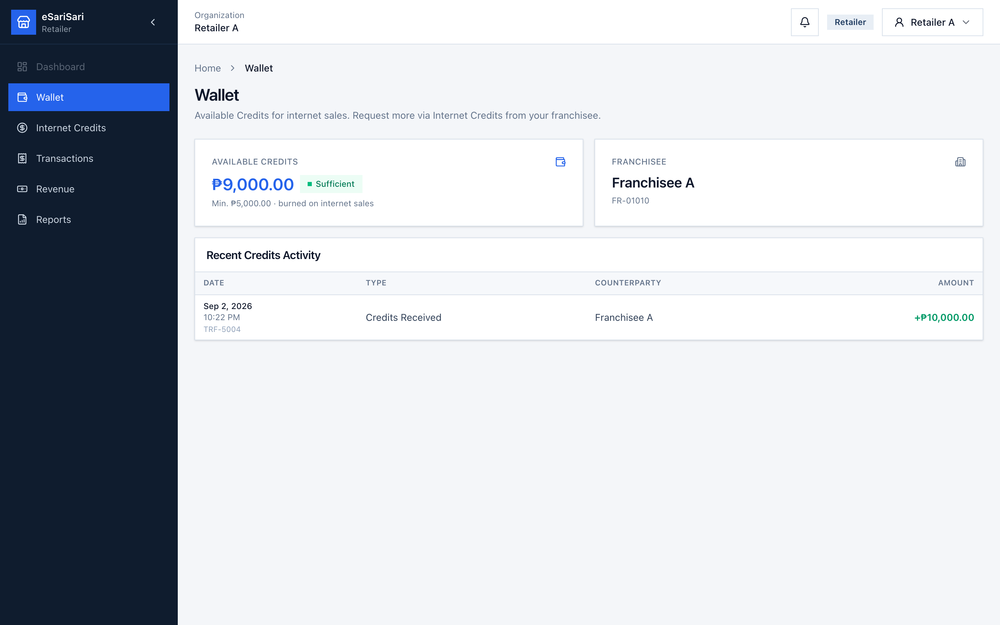
- Sign in as Retailer A. You land on Wallet. The page tells you to request more via Internet Credits from your franchisee.
- Available Credits is what you can still sell. Status Low / Zero (≤ ₱5,000, or ₱0) means restock soon. After a fresh demo you are at ₱0.
- Franchisee shows who you buy from (Franchisee A).
- Recent Credits Activity lists credits received after the franchisee released your request or Direct Release.
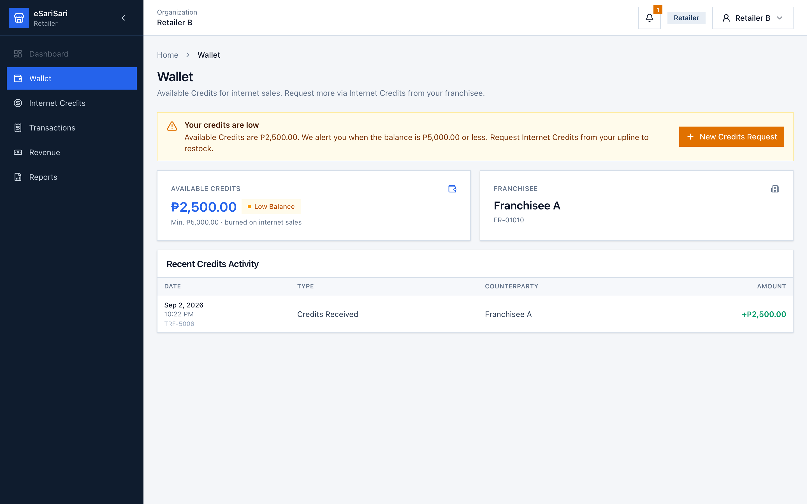
Sign in as Retailer B to see the on-page alert. In this demo Retailer B has ₱2,500 Available Credits, which is ₱5,000 or less, so Wallet shows an amber Low Balance banner in addition to the bell. Zero Balance uses a red danger banner instead.
- Read the banner: it shows the live Available Credits and that we alert when the balance is ₱5,000 or less.
- Click New Credits Request on the banner. That opens Internet Credits with the New Credits Request sheet already open — you do not have to hunt for + New Credits Request.
- Complete the request (deposit, optional proof) the same way as section 5.2. The franchisee’s bell will show it.
5.2 Internet Credits — request stock from the Franchisee
There is no downline tab and no Direct Release. You only request. Credits = deposit ÷ your rate. At 80%, ₱800 cash → 1,000 credits. Your franchisee’s bell will show the request.
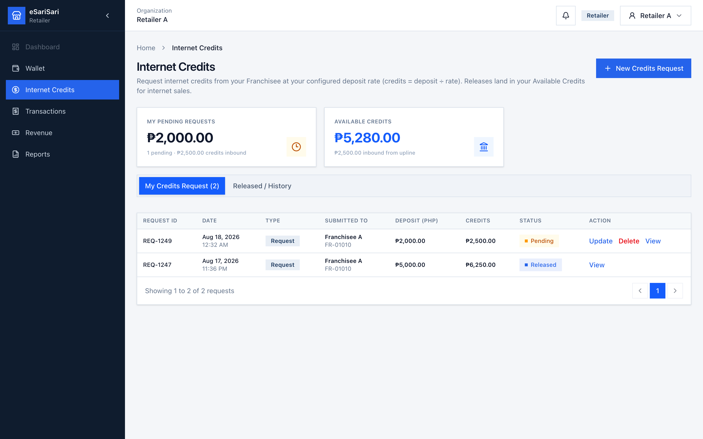
- Click Internet Credits.
- My Pending Requests is cash you sent that is not released yet. Available Credits is live inventory.
- Click + New Credits Request. The New Credits Request sheet opens on the right.
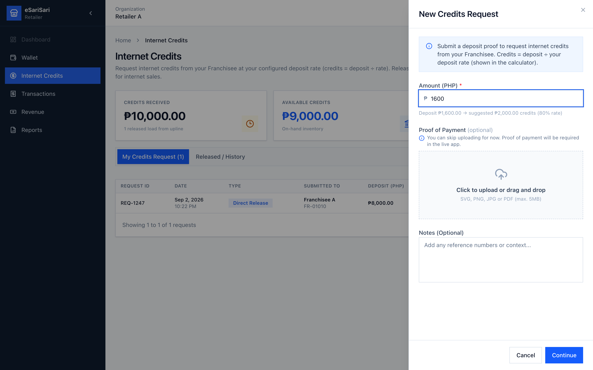
- Enter Amount (PHP) you already sent to Franchisee A. The calculator shows suggested credits at your deposit rate.
- Optionally upload proof and notes → Continue → confirm.
- While Pending, you may Update or Delete. Update reapplies the live rate.
- When the franchisee releases (or Direct Releases), status becomes Released and Wallet Available Credits goes up. Type shows Request or Direct Release.
- Click Released / History to see completed loads.
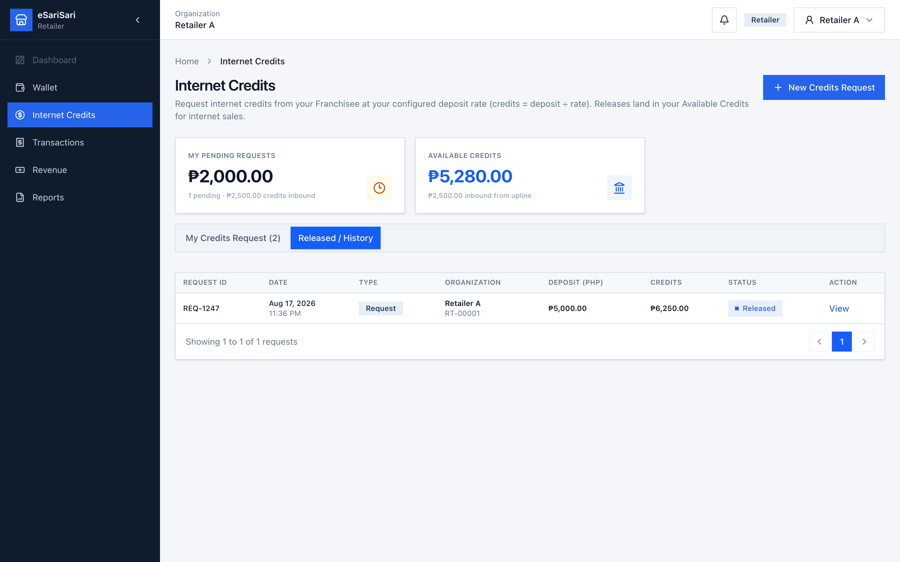
5.3 Transactions — record and read each customer sale
This is the only role that can create a sale in the demo. Record demo sale burns Available Credits and stamps commission shares for the whole chain.
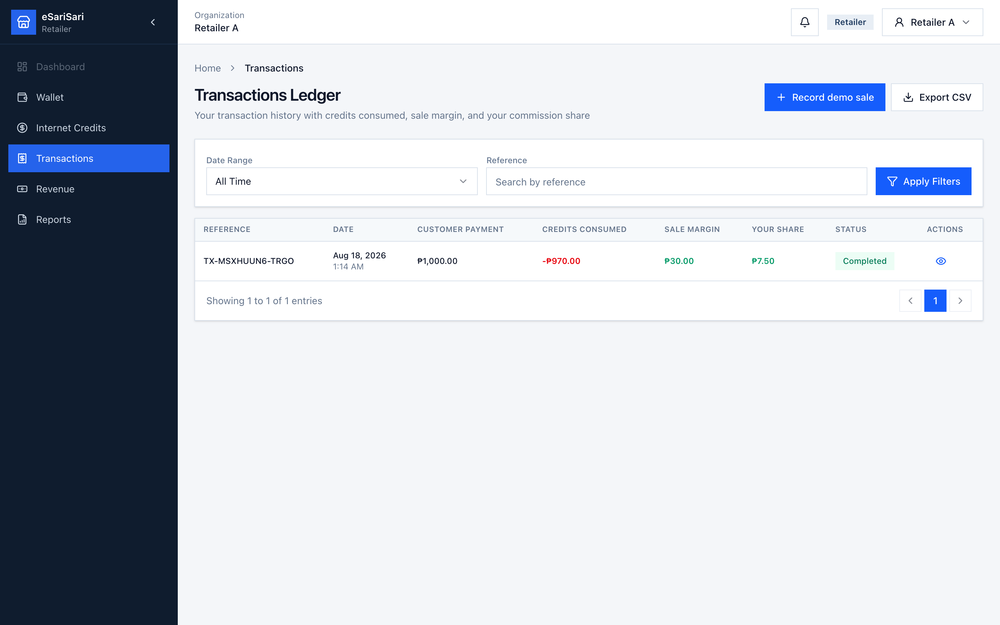
- Click Transactions.
- Click Record demo sale. Pick a product/service (or type one) and enter the customer payment. The preview shows credits that will be consumed (100% of payment) and remaining Available Credits.
- If credits required are more than your Available Credits, restock first. Submit to post a completed sale.
- Read Customer Payment, Credits Consumed, then Your Share (your commission).
- Click the eye. Transaction Details shows product, the chain, and Commission Distribution with You highlighted.
- Optional: Download Receipt, then Close. Export CSV if you need a file.
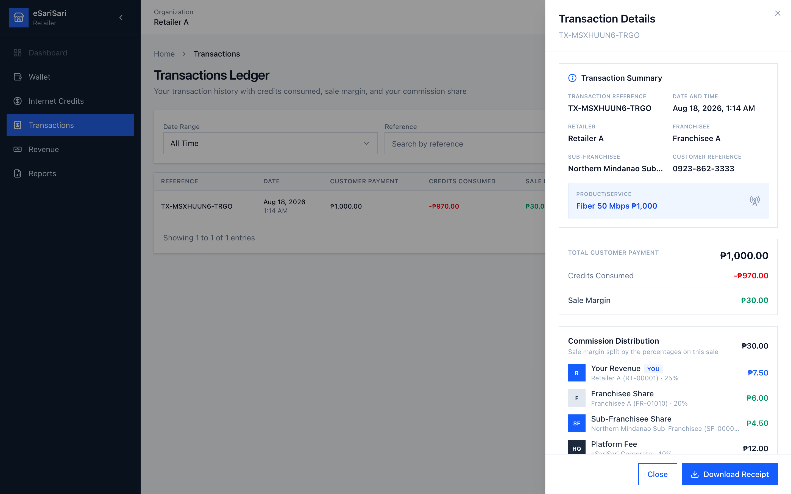
Same ₱1,000 sale, retailer reading:
- Customer paid ₱1,000. That cash is collected at the store. It is not all yours.
- ₱1,000 of credits left your Wallet. That is the inventory cost of the sale.
- Your 10% of sales on Retailer A = ₱100.00. The rest of the ₱1,000 is franchisee, sub-franchisee, and platform shares.
5.4 Revenue — your commission only
Retailers do not have an Internet Credits earnings table. You do not earn a credit spread — you buy at the franchisee’s rate and sell to customers.
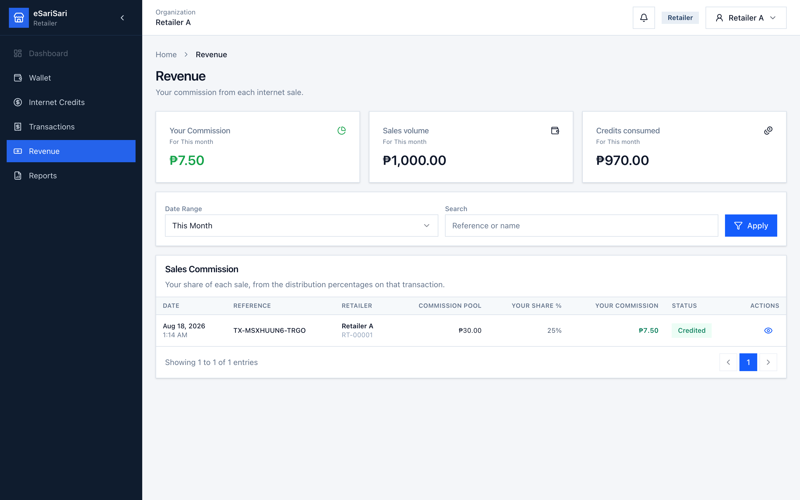
- Click Revenue.
- Your Commission is the sum of your sale shares for the period.
- Sales volume is customer payments. Credits consumed is inventory burned (equal to the payment). Your commission is your % of sales, not the full ₱1,000.
- Change Date Range / search and Apply as needed.
- Sales Commission table lists each sale: Sales, Your share %, Your commission, Status. Click the eye for details.
5.5 Reports
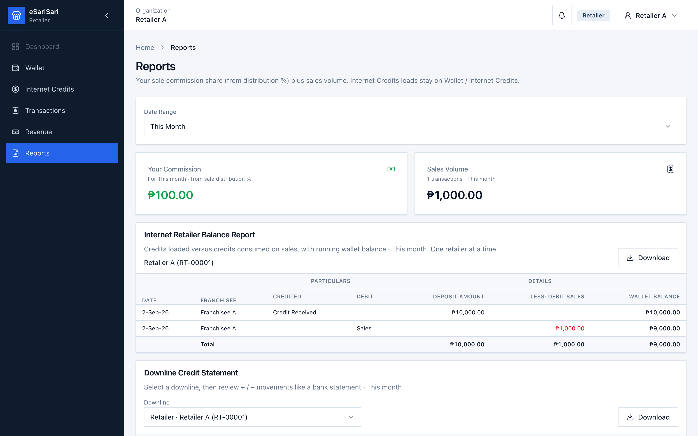
- Click Reports.
- You see Sales Commission and Sales Volume only — no Internet Credits earnings card and no by-downline rollup (you have no load-spread stream).
- Internet Retailer Balance Report is your own wallet: Initial Wallet / Credit Received versus Sales, with running Wallet Balance.
- Downline Credit Statement on this role is your own statement — opening balance, + releases, − sales, ending balance. Download exports that statement as CSV.
- Scroll to Export Reports. You do not get an Internet Credits earnings CSV (you have no load-spread stream).
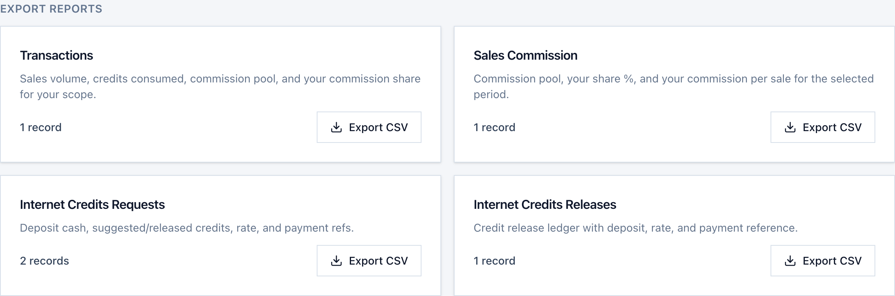
Four CSVs: Transactions (your sales), Sales Commission (your % of each sale), Internet Credits Requests (your buys from the franchisee), and Internet Credits Releases (credits that landed in your Wallet). Same rule as other roles: filters first, then Export CSV. Filename includes retailer.
6. End-to-end flow (all three roles)
Use this when training a new operator. Reset Demo Data first so everyone starts empty except the Sub-Franchisee’s ₱135,000 stock.
A. Restock credits (cash up the chain, credits down)
- Retailer A deposits cash to Franchisee A and submits Internet Credits → + New Credits Request with proof. Franchisee A’s bell shows the request.
- Franchisee A cannot release yet (₱0 stock). Franchisee A submits My Credits Request to the Sub-Franchisee (or the Sub uses Direct Release after cash is confirmed).
- Sub-Franchisee opens the bell or Downlines Credits Request → Review → Approve & Release (payment ref + credits). Sub Available Credits down; Franchisee A up.
- Franchisee A opens Retailers Credits Request (or Direct Release) → Approve & Release. Franchisee Available Credits down; Retailer Wallet up.
- When the Sub-Franchisee is low, they submit My Credits Request to Admin (not covered in this guide) and wait for release.
B. One internet sale (customer cash, then the split)
- Retailer A opens Transactions → Record demo sale (example Smart load ₱1,000). Wallet burns ₱1,000 credits if stock is enough.
- Commission Settings % of the ₱1,000 sales are stamped: retailer 10 / franchisee 20 / sub-franchisee 30 / platform 40.
- Each role opens Transactions → eye icon to see their line. Revenue / Reports add those lines for the month. Sub and Fran also see Internet Credits earnings from the restock in step A.
7. Field meanings (quick reference)
| You see | It means | It is not |
|---|---|---|
| Available Credits | Credit inventory you can sell or release | Cash in your bank |
| Pending Deposits | Cash claimed, not yet released | Already earned revenue |
| Direct Release | Same load as a request, no pending queue | A free transfer without cash / proof / payment ref |
| Internet Credits earnings | Spread (or Admin cash) on credits you sold to a downline | Customer-sale commission |
| Sales Commission / Your Share | Your % of the customer payment (Sales) | The full ₱1,000 |
| Low Balance | Available Credits ≤ ₱5,000 | A second wallet or a cash account |
| Credits Consumed | Inventory burned on a sale | Your commission |
8. Common mistakes
- Releasing credits without matching proof of payment — cash and inventory will not reconcile.
- Releasing when Available Credits After Release is negative — restock from your upline first (Franchisee A starts at ₱0).
- Treating the full customer payment as retailer profit — on a ₱1,000 Retailer A sale the retailer earns ₱100 (10% of sales).
- Changing Deposit Rates and expecting sale commissions to move — they are separate.
- Calling Internet Credits earnings “Load earnings” or mixing it with Sales Commission on Reports.
- Expecting Reverse after a mistaken release — that action is not in the UI.
- Using Reset Demo Data during training — it wipes balances, requests, and sales back to the empty demo.
9. Logout
- Click your name at the top right.
- Click Logout.
- Sign in with the next demo account if you are walking another role.
This guide matches the eSariSari demo build as of 2 September 2026. Admin screens are omitted on purpose. Screenshots are layout references; live numbers depend on the walkthrough you just ran.